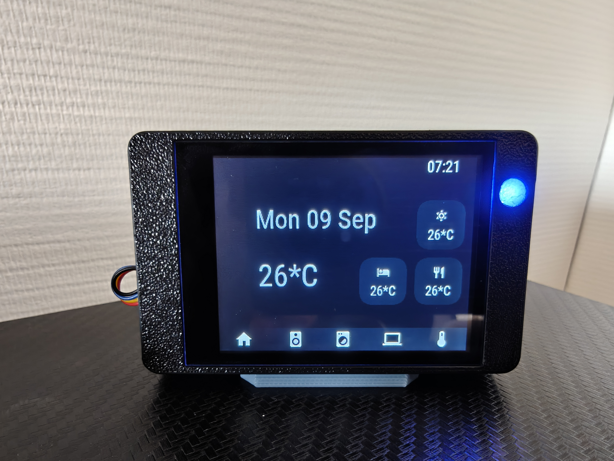

A powerful, affordable \$15 ESP32 capacitive touch desk display running openHASP. Real-time Home Assistant integration for room climate, Claude AI usage, BambuLab 3D printer status, and RGB moodlight notification alerts.
A real photo of the display running on my desk — scroll to flip through each screen, or tap the dots.

Built for efficiency, elegance, and deep Home Assistant integration.
ESP32 dual-core processor with a crisp 2.8" 240x320 capacitive touch LCD. Powered via USB-C on your desk.
Utilize the built-in RGB hardware LED as an ambient status halo on your desk. Instantly see print completions or usage warnings.
I created openHASP Studio, a visual drag-and-drop editor for openHASP layouts, and used it to design these pages instead of hand-writing JSON coordinates. Still a work in progress, but fully functional.
I contributed to the openHASP firmware build files that bring official support for the Guition JC2432W328 hardware, including this display's pinout and moodlight configuration.
Native MQTT integration with openHASP custom component. Effortless two-way state binding with zero lag.
Track daily API calls, token burn, and total cost directly on your desk to stay informed on AI resource consumption.
Live progress percentage, nozzle/bed temperatures, subtask name, and ETA updates straight from your BambuLab 3D printer.
A custom 3D printable desktop enclosure designed specifically for the Guition JC2432W328 with capacitive touch and rear diffuser window for the moodlight LED glow.
Copy configuration snippets for your openHASP plate and Home Assistant automations.
Loading…Loading…Loading…| Feature / Component | ESP32 GPIO Pin | openHASP Configuration Note |
|---|---|---|
| Moodlight Red (RGB LED) | GPIO 4 | Configure in GPIO Settings as Mood Red (Group 1) |
| Moodlight Green (RGB LED) | GPIO 16 | Configure in GPIO Settings as Mood Green (Group 1) |
| Moodlight Blue (RGB LED) | GPIO 17 | Configure in GPIO Settings as Mood Blue (Group 1) |
| TFT Display Backlight | GPIO 21 | PWM backlight dimming control |
| Capacitive Touch (GT911) | SDA: GPIO 33 | SCL: GPIO 32 | I2C Touch controller interface |